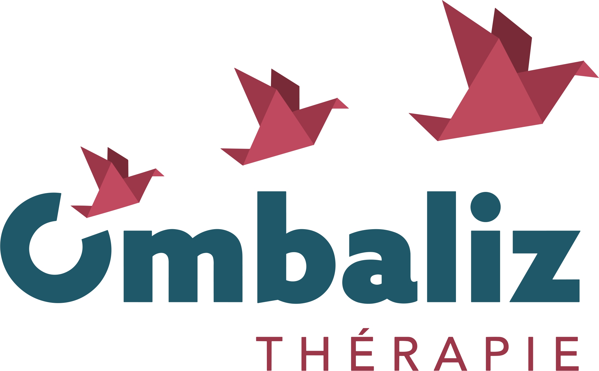

Posez les pieds au sol. Regardez autour de vous et nommez cinq objets. Sentez le contact du siège. Respirez naturellement, sans forcer.
Vous pouvez arrêter ici. Si un souvenir traumatique émerge, ne cherchez pas à le revivre seul : reprenez avec votre thérapeute.